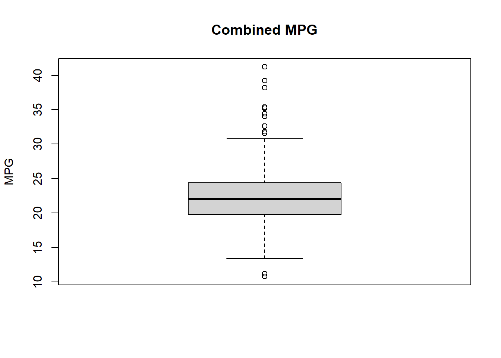
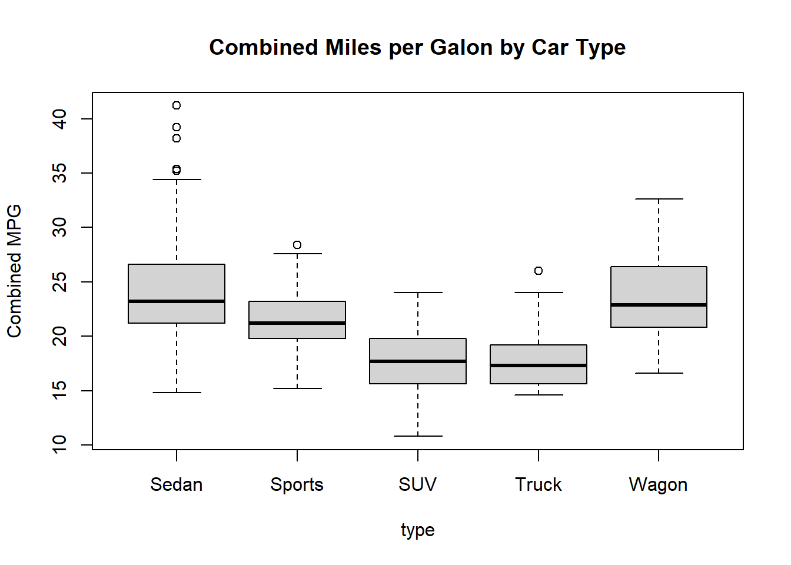
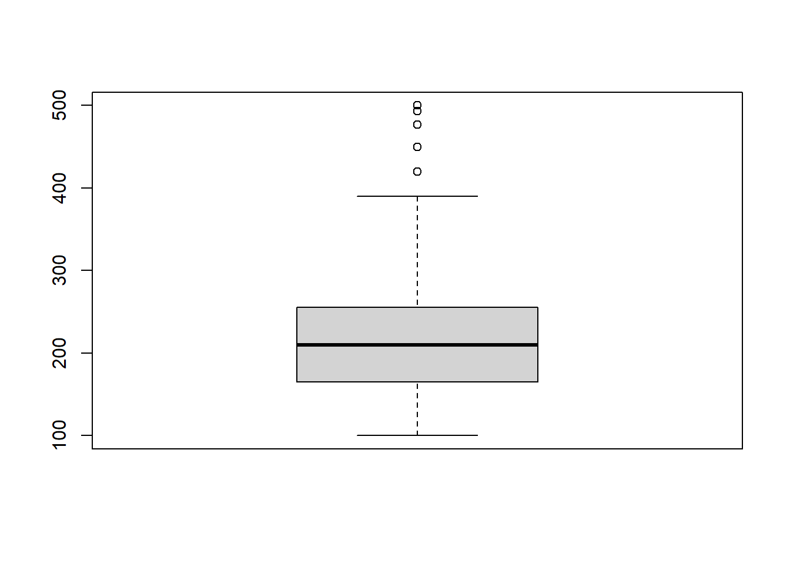
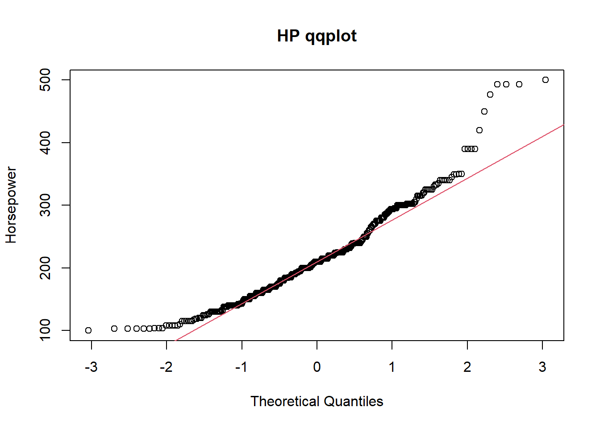
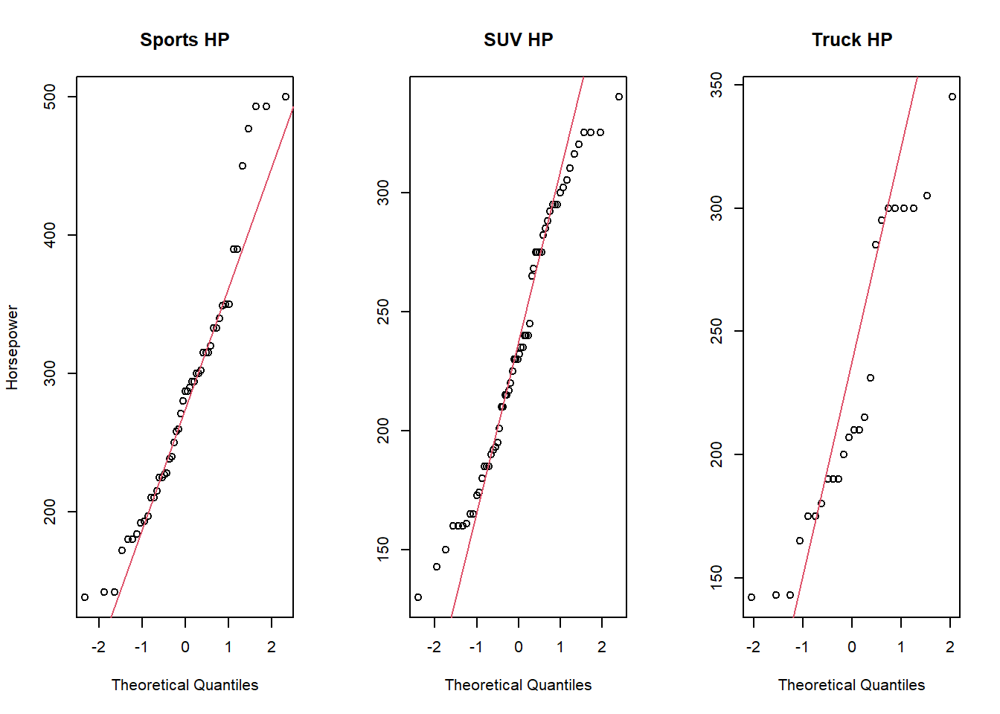
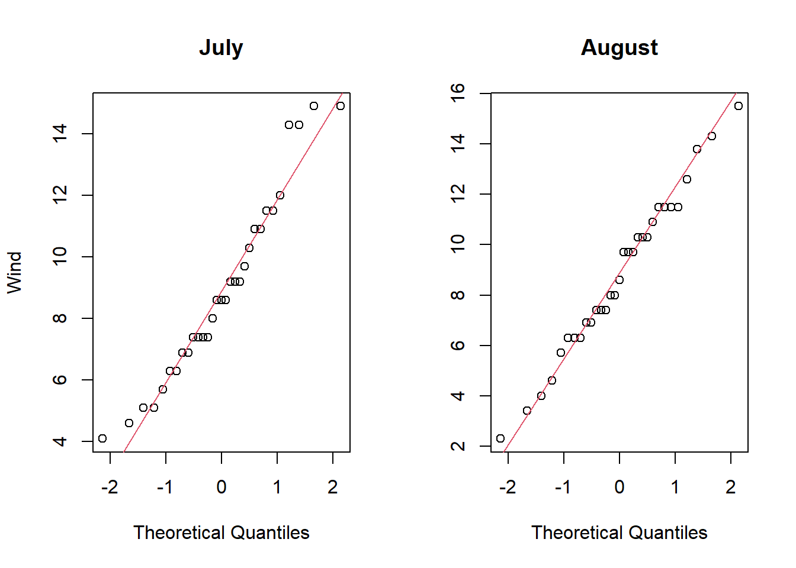

library(tidyverse)HW1 Dan Schumacher
installs and imports
#########################################################
Exercise 1: Descriptive Statistics
#########################################################
Set up
#load data
cars=read.csv("Cars.csv", header = TRUE) # read dataset
# Create a combined mpg variable
MPG_Combo <- 0.6*cars$MPG_City+0.4*cars$MPG_Highway
#Turn into database
cars=data.frame(cars,MPG_Combo)a.) Create a combined mpg variable called MPG_Combo which combines 60% of the MPG_City and 40% of the MPG_Highway. Obtain a box plot for MPG_Combo and comment on what the plot tells us about fuel efficiency.
- This plot looks normally distributed but has a large number of outliers. The median mpg_combo miles per gallon is around 22.5 mpg. Q1 is roughly 20; Q3 is roughly 25. Min at 15, max at 30.
boxplot(cars$MPG_Combo,
main = 'Combined MPG',
ylab = 'MPG')
B.) Obtain box plots for MPG_Combo by Type and comment on any differences you notice between the different vehicle types combined fuel efficiency.
These boxplots show that SUV and Truck have the worst combined mpg performance. Sedan and Wagon have the best mpg performance. Sedan is also responsible for most of the outliers. Sedan (minus outliers), Sports, and SUV all look normally distributed. Trucks clearly are Right Skewed. Wagon seems slightly right skewed.
boxplot(MPG_Combo ~ Type,
data = cars,
main = 'Combined Miles per Galon by Car Type',
xlab = 'type',
ylab = 'Combined MPG')
C.) Obtain basic descriptive statistics for Horsepower for all vehicles. Comment on any general features and statistics of the data. Use visual and quantitative methods to comment on whether an assumption of Normality would be reasonable for Horsepower variable.
Here we see that the mean is slightly larger than the median meaning that the data collectively could potentially be right skewed (positively skewed) however with only a difference of 6.8 it is hard to tell without further tests.
summary(cars$Horsepower) Min. 1st Qu. Median Mean 3rd Qu. Max.
100.0 165.0 210.0 216.8 255.0 500.0 The box-plot is evidence towards Horsepower being right skewed.
boxplot(cars$Horsepower)
This follows the theoretical curve pretty well until about +1 quantile.
qqnorm(cars$Horsepower, main = 'HP qqplot', ylab='Horsepower'); qqline(cars$Horsepower,col =2)
To be thorough, we can run a Shapiro-Wilk test.
H0: data is norm dist
Halt: data is not norm dist
Below we see a very small p-value. With a great deal of certainty we can reject the null hypothesis. Horsepower is not normally distributed.
shapiro.test(cars$Horsepower)
Shapiro-Wilk normality test
data: cars$Horsepower
W = 0.94573, p-value = 2.32e-11D.) Use visual and quantitative methods to comment on whether an assumption of normality would be reasonable for Horsepower variable by Type, especially for Sports, SUV , and Truck (i.e., check normality of Horsepower from Type of i) Sports, ii) SUV, and iii) Truck.
- Visual:
- Sport and SUV follow the ideal line pretty well. Truck, not so much. These charts support Sports and SUV being Normally distributed, and Truck having a non-normal distribution.
par(mfrow = c(1,3))
Sports = filter(cars, Type == 'Sports')
SUV = filter(cars, Type == 'SUV')
Truck = filter(cars, Type == 'Truck')
## Visual
qqnorm(Sports$Horsepower, main = 'Sports HP', ylab='Horsepower');
qqline(Sports$Horsepower,col =2)
qqnorm(SUV$Horsepower, main = 'SUV HP', ylab='');
qqline(SUV$Horsepower, col =2)
qqnorm(Truck$Horsepower, main = 'Truck HP', ylab='');
qqline(Truck$Horsepower, col =2)
- Quantitative
We will use the Shapiro-Wilk test. Here we see that all 3 categories have a low enough p value to reject the Shapiro-Wilk H0. We can continue assuming that all three variables are not normally distributed.
shapiro.test(Sports$Horsepower)
Shapiro-Wilk normality test
data: Sports$Horsepower
W = 0.94276, p-value = 0.01898shapiro.test(SUV$Horsepower)
Shapiro-Wilk normality test
data: SUV$Horsepower
W = 0.95945, p-value = 0.04423shapiro.test(Truck$Horsepower)
Shapiro-Wilk normality test
data: Truck$Horsepower
W = 0.8951, p-value = 0.01697#########################################################
Exercise 2: HYPOTHESIS TESTING
Perform a hypothesis test of whether SUV has different Horsepower than Truck, and state your conclusions.
#########################################################
a.) Which test should we perform, and why? Justify your answer based on findings on Exercise 1
The data has 2 populations (SUV and Truck)
We need to know if our data is normally distributed. We will use the Shapiro-Wilk Normality Test.
SWNT H0: Normally distributed
SWNT Halt: Not Normally distributed
Below we see that both of our data sets have a p-value of less than .05. Therefore, we can continue under the assumption that both populations are not normally distributed.
shapiro.test(SUV$Horsepower)Shapiro-Wilk normality test data: SUV$Horsepower W = 0.95945, p-value = 0.04423shapiro.test(Truck$Horsepower)Shapiro-Wilk normality test data: Truck$Horsepower W = 0.8951, p-value = 0.01697Since our populations are not normally distributed, the last thing that we need to test is our populations to see whether or not they fall in the same distribution.To do this we will perform the Wilcoxen Rank Test
b.) Specify null and alternative hypotheses.
H0: the 2 populations are from the same distribution
Halt: the 2 populations are not from the same distribution.
c.) State the conclusion based on the test result.
- With a p value = .3942, we cannot reject the null hypothesis. These two populations (Truck and SUV) are from the same population.
wilcox.test(SUV$Horsepower,
Truck$Horsepower,
alternative = 'two.sided')
Wilcoxon rank sum test with continuity correction
data: SUV$Horsepower and Truck$Horsepower
W = 806.5, p-value = 0.3942
alternative hypothesis: true location shift is not equal to 0#########################################################
Exercise 3: HYPOTHESIS TESTING (AGAIN)
Perform a hypothesis test -whether Wind in July has a different speed (mph) than Wind in August
#########################################################
Set up
July = filter(airquality, Month == '7')
August = filter(airquality, Month == '8')a.) Which test should we perform, and why? See QQ-plot and perform the Shapiro-Wilk test for normality check.
The data looks like it follows the ideal red line extremely well! Let’s verify with our Shapiro-Wilk Normality Test.
par(mfrow = c(1,2))
## Visual
qqnorm(July$Wind, main = 'July', ylab='Wind');
qqline(July$Wind,col =2)
qqnorm(August$Wind, main = 'August', ylab='');
qqline(August$Wind, col =2)
- According to the results below (High p-values, therefor cannot reject null), we can continue assuming that both groups are normally distributed.
# Remember:
# H0: Normally distributed
# Halt: NOT Normally Distributed
shapiro.test(July$Wind)
Shapiro-Wilk normality test
data: July$Wind
W = 0.95003, p-value = 0.1564shapiro.test(August$Wind)
Shapiro-Wilk normality test
data: August$Wind
W = 0.98533, p-value = 0.937Again, we have 2 populations (July & August). However, this time around we can assume that both groups are normally distributed. There is one more step before we continue. Do the groups have the same (pooled t-test) or different (Satterthwaite t-test) variances?
To find out whether the two populations share variance, we must perform an F-Test
H0: var1 = var2
Halt: var1 != var2
In the following code, we see a high p-value! We cannot reject H0. Therefor we will assume that the variance is the same between our populations.
var.test(July$Wind, August$Wind, alternative = "two.sided")
F test to compare two variances
data: July$Wind and August$Wind
F = 0.8857, num df = 30, denom df = 30, p-value = 0.7418
alternative hypothesis: true ratio of variances is not equal to 1
95 percent confidence interval:
0.4270624 1.8368992
sample estimates:
ratio of variances
0.8857035 To review, we will use a pooled t-test because:
- 2 populations
- Both Normally distributed
- same variance between populations
b.) Specify null and alternative hypotheses
H0: \(\mu_1 = \mu_2\) (mean jul = mean aug)
Halt: \(\mu_1 \neq \mu_2\) (mean jul != mean aug)
c.) State the conclusion based on the test result
With a p value of .85 we cannot reject the null hypothesis. We conclude that on average wind speed is the same in July and August.
t.test(July$Wind, August$Wind, var.equal=T, alternative = 'two.sided')
Two Sample t-test
data: July$Wind and August$Wind
t = 0.1865, df = 60, p-value = 0.8527
alternative hypothesis: true difference in means is not equal to 0
95 percent confidence interval:
-1.443108 1.739883
sample estimates:
mean of x mean of y
8.941935 8.793548